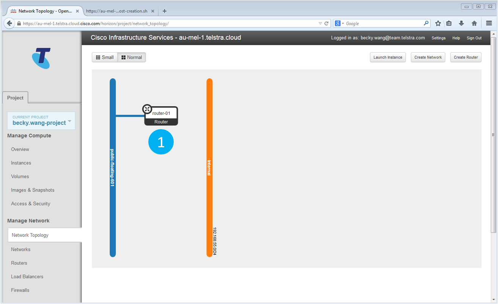
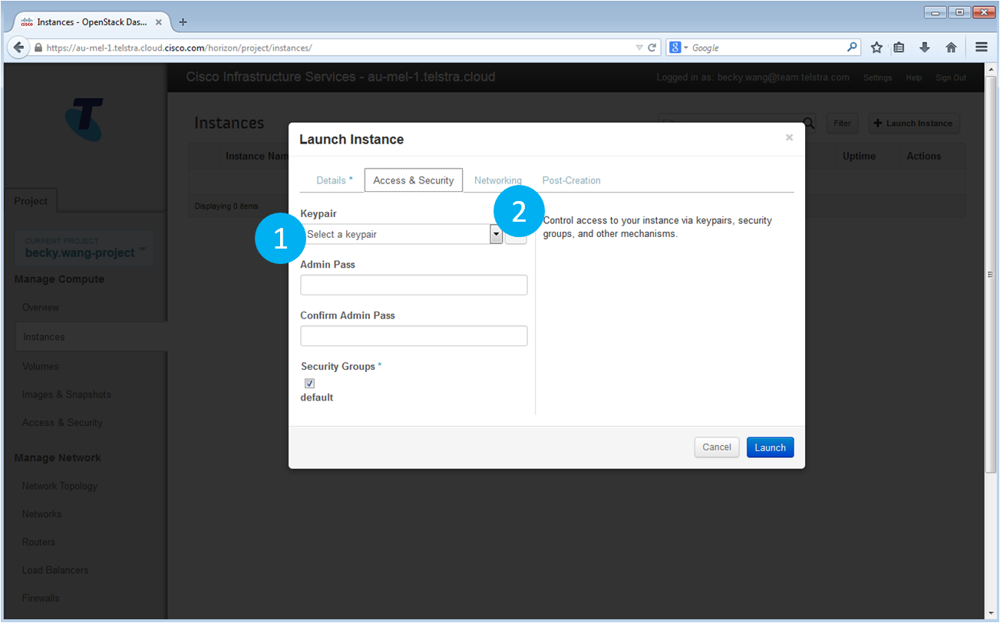

Welcome to the Cisco Cloud Openstack exercise.
The goal of this exercise is to provide firsthand experience with Horizon - the Openstack portal.
In this exercise you will create a web site that you can access from your laptop or mobile phone.
You will build the web site from scratch, including networking, virtual machines and, as a stretch target, a load balancer.
Access the Portal
- To begin, click here
- To access the portal, please enter your username and password in the appropriate box and hit “Sign In”.
Horizon Dashboard
- In the navigation pane, you will see your current project. Your project name will be different.
- The main pane provides a view of the resources currently used by the project.
As this is a new project, all resources should be idle and set to zero.
- The Usage Summary provides a per-instance view of the resources used by the project.
Again, as this is a new project, the summary should be empty.
- In the navigation pane, select Network Topology.
Our next step will be to view the current network set up of our project.
Finished Project
- The blue vertical line represents the internet-facing public network of the project.
Every project starts with a public network.
- The orange vertical line represents the internal private network. In the exercise, we will create the private network first as all the other components rely on it.
- The box labelled Router represents the connection between the public and private networks. We will create the router in this exercise.
- The boxes labelled Instance represent the web servers the serve up the web page for this exercise. We will create these web servers in this exercise.
OpenStack Network View

- The only component we have in this view is the public network, denoted as the vertical blue line labelled “public- floating-601”.
- In the navigation pane, select Networks.
Our first goal is to add a private network.
- NOTE: To change the size of the icons displayed in the Network Topology view, select either “Small” or “Normal”. This is optional, but may come in handy throughout the exercise.
Create a Private Network
The Networks view provides a list of private networks associated with the project.
- Currently the list is empty. To create a new private network, select + Create Network.
A pop-up window will appear.
Create a Private Network. Step One.
To create a new network, step through the Create Network wizard as shown above.
- In the “Network Name” text box, provide a name for the Private Network. A good choice is “internal”.
All other fields can be left to their default values.
- Select the Subnet tab to move to the next step.
Create a Private Network. Step Two.
- In the “Subnet Name” text box, provide a name for the subnet. A good choice is subnet-01.
- In the “Network address” text box, provide the network address. A good choice is “192.168.55.0/24”.
All other fields can be left to their default values.
- Select the “Subnet detail” tab to move to the next step.
Create a Private Network. Step Three.
- In the DNS Name Servers text box, enter “8.8.8.8”.
This address points to Google servers and makes it possible to connect to other websites.
- Once done, select Create to create the Private Network.
You will be returned to the Networks view.
New Private Network.
Once completed, a new network entry will appear in the Networks list.
- The name should be “internal”, the associated Subnet should match that IP address range you provided.
The Status should be ACTIVE
- To view the private network, select Network Topology.
Updated Network Topology.
- The private network is depicted as a vertical orange line.
- Select Routers from the navigation pane.
We will now create a router to connect the public network to the private network.
Configure a Router.
The router will connect the public network to the private network.
- The main view lists the routers created for this project. The list should be empty.
- To create a new router, select + Create Router
A pop-up window will appear.
Configure a Router. Step One.
Creating a new router is simple – give it a name.
- In the Router Name field, type a name for your router. A good choice is “router-01".
- Once you have typed the name, select Create Router.
You will be returned to the Routers view.
Configure a Router. Step Two.
- Once completed, a new router entry will appear in the Routers list.
The name should be “router-01”. The Status should be “ACTIVE".
- The next step is to connect your new router to the public network. Select Set Gateway.
A pop-up window will appear.
Configure a Router. Step Three.
- In the External Network drop-down box, select the public network “public-floating-601”
- Once you selected the public network, select Set Gateway to set the gateway
You will be returned to the Routers view.
Configure a Router. Step Four.
- Once completed, the router entry will be updated so that the External Network field will point to the public network.
- To view the router, select Network Topology.
Configure a Router. Step Five.
- The router is now connected to the public network. To view more information about the router, place your mouse pointer over the Router icon.
A new window with details about the Router will appear.
Configure a Router. Step Six.
The details view provides further information such as STATUS as well as a list of interfaces.
- To connect the private network, we will create a new Inteface. Select view router details.
Configure a Router. Step Seven.
- The main view lists the interfaces for this router. The interfaces describe the connections to the private network.
At present, the list should be empty.
- To create a new interface, select + Add Interface.
A pop-up window will appear.
Configure a Router. Step Eight.
- In the Subnet drop-down box, select the subnet for the private network “internal: 192.168.55.0/24 (subnet-01)”.
All other fields can be left to their default values.
- Once you selected the private network, select Add Interface to add the interface.
You will be returned to the Router Overview view.
Configure a Router. Step Nine.
With the Interface, the Router should now connect the public and private networks.
- Once completed, a new interface entry will appear in the Interfaces list.
If the Status is “DOWN”, hit re-fresh on your browser a few times to see if the status changes.
- To view the connection, select Network Topology.
Router Configured.

- The router has now been configured to connect the public and private networks.
It is now possible to add new instances and access them from the public internet.
- To create a new instance, select Instances from the navigation pane.
Create an Instance.
- The main view lists the Instances for this project.
At present, the list should be empty.
- To create a new instance, select + Launch Instance”.
A pop-up window will appear.
Create an Instance. Step One.
- In the Instance Name text box, provide a name for the instance. A good choice is “web-app-instance”.
- In the Flavour pull-down menu, select Micro-Small.
- In the Instance Boot Source pull-down menu, select Boot from Image.
Once selected, a new pull-down box will appear entitled “Image Name”.
- In the Image Name pull-down menu, select ubuntu-trusty-server-cloudimg-amd64-disk1.2014-09-27.
All other fields can be left to their default values.
- Select the Access and Security tab to move to the next step.
Create an Instance. Step Two.
- In the Keypair pull-down menu, select web_key_pair.
All other fields can be left to their default values.
- Select the Networking tab to move to the next step.
Create an Instance. Step Three.
- From the “Available networks” box, drag and drop the internal network label into the “Selected Networks” box.
- Select the Post-Creation tab to move to the next step.
Create an Instance. Step Four.
In order to turn this instance into a web server, we need to add some extra packages which we will download from the Internet. In order to tell OpenStack which packages to retrieve we will provide a script. For this exercise, the script can be found here.
- When you have copied the script, paste it in the Customisation Script textbox.
- Once you have pasted the script, select Launch to launch the instance.
You will be returned to the Instances view
Instance Created.
- Once completed, a new instance entry will appear in the Instances list.
The instance will have a private IP address assigned to it and the Status should be “Active”.
- It may take a minute or two for the instance to boot up, but once it is, the Power State will be “Running”.
- The next step is to add a public IP address to the instance. Select Access and Security from the navigation pane.
Add a Public IP Address.
- The main view lists the Security Groups for this project.
One security group – “default” – has been set up for the project.
- To add a public IP address to the instance, select the Floating IPs tab.
Add a Public IP Address. Step One.

- The main view lists the Floating IPs for this project. Presently, there are no IP addresses allocated to the project.
- To allocate a public IP, select Allocate IP To Project.
A pop-up window will appear.
Add a Public IP Address. Step Two.

- In the Pool pull-down menu, select public-floating-601.
“public-floating-601” should be the only available option.
- Select Allocate IP to allocate the IP address to the project.
You will be returned to the Floating IPs view.
Add a Public IP Address. Step Three.
- Once completed, a new public IP address entry will appear in the Floating IPs.
The value in the “Instance” column should be a “-“.
- To associate the public IP address to an instance, select Associate.
A pop-up window will appear.
Add a Public IP Address. Step Four.
- In the IP Address pull-down menu, select the newly allocated public IP address.
There will only be one IP address to select.
- In the Port to be associated pull-down menu, select the private IP address for the instance.
- Select the Associate button to associate the public IP address to the instance.
You will be returned to the Floating IPs view.
Public IP Address Created.
- Once completed, the value in the “Instance” column should be a “web-app-instance”.
- You can now view your creation! Open a new tab in your browser and enter the IP address.
Give the site a few minutes to set up. Hit refresh a few times if the site is not immediately available.
Just checking ...
- If things didn't go to plan, click HERE to see one we created earlier.
If you are up for it - now add a Load Balancer
- To build a Load Balancer, click HERE to start.